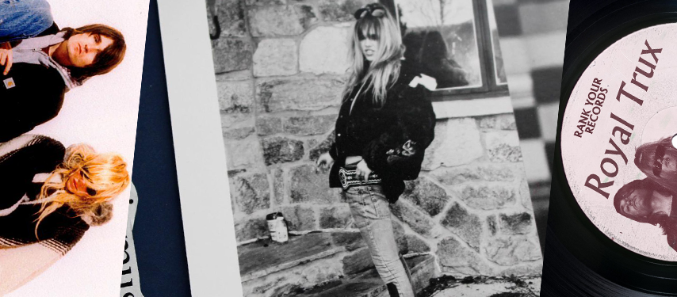

Jennifer Herrema
Musician, Designer, Artist
Jennifer Herrema is an American musician, designer, and style icon who is best known for being one half of infamous rock band Royal Trux. In addition to playing in her own band, Black Bananas, Herrema hosts her own Dublab radio show (“The Banana Question”) and has a series of ongoing fashion collaborations happening with Feathered Fish and Hysteric Glamour. In addition to playing shows, Royal Trux will release a live album later this year.
Making stuff and
Never giving a fuck.
I like doing stuff I’ve never done before and if you put yourself out there in the world as someone who is willing to try weird shit, eventually someone will ask you to. It wasn’t even like I considered myself a musician, I just considered myself an artist. I didn’t want to do any one particular type of thing.t. Am I forgetting anything?
As you get older, one would hope that some of those personality issues eventually fall to the wayside. Did it feel weird at all to get back into all of that old material?
I think we were both pleasantly surprised at how positive everything was. About a year ago I started digging out old boxes and I found these huge boxes of old fan mail, back when when people used to write letters to bands. I have boxes and boxes of them. Inside one of them were these two dolls made of drumsticks and I remembered them from when we got them so many years ago. So, I put them up on the wall and I found the letter that came with them, which I’d never really looked at before. Turns out the letter was from Cody Critcheloe—the guy who records as SSION—and he had sent it to us, like, 20 years ago when he was a kid in Kansas City. He is someone that I know now—like, I just did vocals on his album a few weeks ago. It was some weird kismet thing. It’s kind of awesome how these things just come back around. That probably wouldn’t have happened if the band hadn’t reformed. It makes me feel like I’m doing something right.
It’s kind of like everything to me. I don’t like to be told what to do, even if it’s the right thing. (laughs) You know, it’s like, don’t tell me the right thing to do cause I will definitely do the wrong thing. I think I’m a “cut off my nose off to spite my face” kind of person sometimes. Having to answer to somebody or live up to somebody else’s standards, or—even worse—to create things because you are obligated to, that has never really appealed to me. I already know I’m not going to be good at that, so I’m not going to ever allow that. You know? I always knew that so I had to just play it my own way or else I wouldn’t be happy. And then that ends up being the thing people love about you. It’s super cool. I mean it’s not easy, but I’ve been very fortunate. There are so many different things that could’ve made it much harder for me to do what I do. I mean, I would’ve done my own thing just the same but I can only imagine. Even as a kid I never understood what is it that grown-ups do. How do they make money to buy a house? Why do they have these children, that they have to pay to send to school? So I guess I always knew that kind of life wasn’t for me. Nothing has ever been as important to me, ever, as health and love. Like that’s about it… Health and love and independence. Because I don’t give a shit about money.
You do a little bit of everything—make music, design clothes and jewelry, do a radio show, make visual art. Am I forgetting anything?
You recently reformed your old band, Royal Trux, and started playing shows again. How does it feel to resurrect a creative endeavor like that after you’d been away from it for so long?
What does it mean to be creatively independent, to do whatever you want?
This article was originally published in The Creative Independent. This website uses the article for educational purposes.
Jennifer Herrema on making stuff and never giving a fuck, https://thecreativeindependent.com/people/jennifer-herrema-on-making-stuff-and-never-giving-a-fuck/